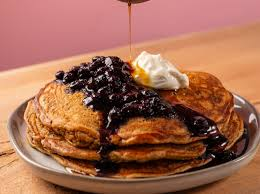

Food

Food is any nutritious substance—primarily composed of
carbohydrates, fats, proteins, vitamins, and minerals—consumed by living organisms to sustain
growth, repair tissues, provide energy, and maintain vital life processes. It includes solid,
liquid, or raw/processed materials used for nourishment, often specifically referring to
solid items.